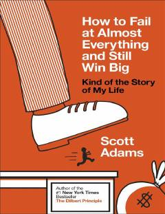

HTMuvaffaqiyatsizliklardan saboq chiqarib, hayotda katta g'alabalarga erishish yo'llari.
Ushbu kitob muallifning shaxsiy hayotidagi ko'plab muvaffaqiyatsizliklar va ulardan qanday qilib katta g'alaba bilan chiqqani haqida hikoya qiladi. An'anaviy maqsadlar qo'yish o'rniga tizimli yondashuvni qo'llash muhimligi tushuntiriladi. Shuningdek, hayotda energiyani boshqarish va to'g'ri qarorlar qabul qilish sir ochib beriladi.